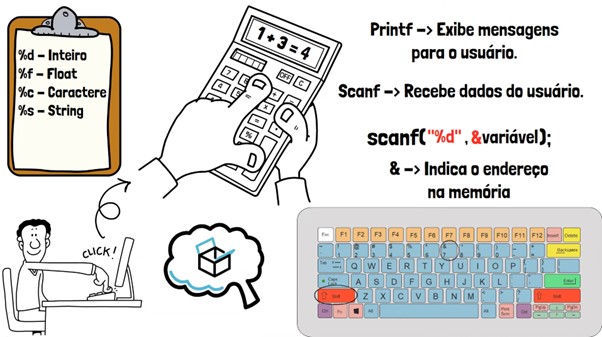

Introdução aos Comandos de Entrada e Saída em C
Os comandos de entrada e saída em C são fundamentais para interagir com o usuário e manipular dados. Eles permitem que você receba informações do teclado e exiba resultados na tela. Os dois principais comandos utilizados são: printf() para saída e scanf() para entrada.
Bibliotecas básicas em C
Para as linhas de código funcionarem é preciso incluir as bibliotecas necessárias conforme os
comandos utilizados. É a primeira coisa que deve aparecer no seu código, utiliza-se a diretiva:
“#include <nome_da_biblioteca.h>”. Ela serve para adicionar outro arquivo ao
programa, é como se no
lugar da diretiva fosse digitado o conteúdo do arquivo que está interligado.
A seguir algumas
das principais bibliotecas em C, e algumas de suas principais funções:
Entrada e saída (input e output): #include <stdio.h>
printf() commando de saída de valor
scanf() comando de entrada de valor
getchar() ler caractere retorna valor ASCII
Biblioteca padrão: #include <stdlib.h>
srand()gerar número aleátorio
Funções matemáticas: #include <math.h>
floor( )arredonda para baixo
ceil( )arredonda para cima
sqrt( )Calcula raiz quadrada
pow(variável, expoente)potenciação
sin( )seno
log10( )logaritmo base 10
Funções para strings: #include <string.h>
strlen() retorna valor de comprimento da string
Saída de Dados: printf()
O comando printf() é usado para exibir dados no console. A função segue o seguinte
formato:
printf("texto ou formato", variável);
#include <stdio.h>
int main() {
int idade = 25;
printf("A sua idade é %d anos", idade");
return 0;
}
Neste exemplo, %d é um especificador de formato que indica que um número inteiro será exibido. Outros especificadores incluem %f (float), %c (caractere), e %s (string).
Entrada de Dados: scanf()
O comando scanf() permite que você capture dados digitados via teclado. Ele tem o
seguinte formato:
scanf("formato", &variável);
#include <stdio.h>
int main() {
int idade;
printf("Digite sua idade: ");
scanf("%d", &idade);
fflush(stdin);
return 0;
}
Aqui, o especificador %d indica que estamos esperando um número inteiro, e o símbolo & é usado para passar o endereço da variável onde o dado será armazenado.
Cuidados ao Usar scanf()
Sempre utilize o & antes das variáveis, exceto para strings.
O comando
fflush(stdin) é usado para limpar o buffer de entrada. Ele se torna necessário em
alguns casos após a leitura de dados com scanf(), especialmente quando se lida com
diferentes tipos de entrada (por exemplo, inteiros seguidos de caracteres ou strings). Isso ocorre
porque o scanf() pode deixar caracteres de "nova linha" (\n) ou
outros dados no buffer, o que pode interferir em leituras subsequentes
#include <stdio.h>
int main() {
char letra1, letra2;
printf("Digite uma letra: ");
scanf("%c", &letra1);
printf("Digite outra letra: ");
scanf("%c", &letra2);
printf("Voce digitou: '%c' e '%c'", letra1, letra2);
return 0;
}
A falta do fflush(stdin) faz com que após informar a primeira letra no scanf(), quando o usuário dá um "enter", este "enter" (letra digitada '\n') é guardado no buffer de entrada do teclado (stdin) e quando queremos guardar a segunda letra, automaticamente será atribuído '\n' à variável letra2, pois o valor já estava no buffer de entrada.
Exemplo de uso correto:
#include <stdio.h>
int main() {
char letra1, letra2;
printf("Digite uma letra: ");
scanf("%c", &letra1);
fflush(stdin);
printf("Digite outra letra: ");
scanf("%c", &letra2);
printf("Voce digitou: '%c' e '%c'", letra1, letra2);
return 0;
}
Uso do getchar
Quando a função main finaliza a sua execução o programa fecha. Códigos precisam de
uma forma de dizer ao sistema para esperar antes de fechá-los, assim dando tempo para ver o valor de
saída final do programa. Uma forma de fazer isso é utilizar o getchar(), esse
comando faz com que fique esperando a entrada de algum valor, ou seja, espera o usuário pressionar
alguma tecla antes de finalizar.
Importante lembrar de utilizar o fflush(stdin)
antes do getchar() para que ele não leia o enter como a entrada, assim fechando o
programa.
Exemplo:
#include <stdio.h>
int main() {
char letra1, letra2;
printf("Digite uma letra: ");
scanf("%c", &letra1);
fflush(stdin);
printf("Digite outra letra: ");
scanf("%c", &letra2);
fflush(stdin);
printf("Voce digitou: '%c' e '%c'", letra1, letra2);
getchar();
return 0;
}
Entrada e saída de Dados para strings
Strings são uma sequência de caracteres em ordem. Para conseguir alocar todos os caracteres do valor de entrada deve ser utilizado o comando gets() no lugar de scanf, pois ele consegue armazenar caracteres após um espaço, ou seja, consegue guardar várias palavras na mesma variável:
#include <stdio.h>
int main() {
char nome[30];
printf("Digite nome: ");
gets(nome);
printf("Nome: ");
puts(nome);
getchar();
return 0;
}
Foi utilizado o gets() para receber o valor, e printf e puts() como comandos de saída. A variável da string também poderia ser convocada no meio do printf, sem haver a necessidade de utilizar o puts() da seguinte maneira:
printf("Nome: %s", nome);
Infográfico
Uma representação visual da sintaxe do printf() e scanf(), mostrando os parâmetros e os tipos de dados.

Um vídeo explicativo fazendo a demonstração dos comandos básicos.
Exercício Resolvidos (com passo a passo):
1. Some dois numeros inteiros e mostre o resultado:
#include <stdio.h>
int main() {
// Declaração de variáveis do tipo inteiro
int a, b, soma;
printf("Digite um número inteiro:\n");
scanf("%d", &a); // Recebe um inteiro e armazena na variável a
fflush(stdin);
printf("Digite outro número inteiro:\n");
scanf("%d", &b); // Recebe um inteiro e armazena na variável b
fflush(stdin);
soma = a + b;
// Efetua adição de a com b e armazena na variável soma
printf("O valor da soma = %d\n", soma); // Mostra mensagem com o resultado
return 0;
}
2. Leitura e Exibição de Nome e Idade:
#include <stdio.h>
int main() {
// Declaração de variáveis do tipo inteiro e uma string de até 49 caracteres
int idade;
char nome[50]; // 50 define o tamanho máximo da string (incluindo o caractere nulo)
printf("Digite sua idade: ");
scanf("%d", &idade); // Lê um valor inteiro e armazena na variável idade
fflush(stdin); // Limpa o buffer do teclado para evitar problemas ao ler a string
printf("Digite seu nome: ");
scanf("%s", nome); // Lê uma string (sem espaços) e armazena na variável nome
printf("Nome: %s, Idade: %d\n", nome, idade); // Exibe o nome e a idade
return 0;
}
Exercícios
A lista de exercícios a seguir possui desafios que envolvem o uso de variáveis, caso sinta dificuldade,
passe para o próximo assunto do curso (Variáveis) e depois volte.
Nas respostas dos exercícios pode haver comentários dentro do código para explicar algo em específico.
As partes de comentários não são exibidas para o usuário do programa, ficam apenas no código-fonte e
iniciam com duas barras seguidas: >//comentario…
1. Escrever um programa que exiba: Ola, mundo!".
#include <stdio.h>
int main() {
printf("Ola, mundo!");
getchar();
return 0;
}
2. Escrever um programa que exiba “Ola, mundo!” pule uma linha e exiba “Tudo bem?”. Comando para pular linha: \n.
#include <stdio.h>
int main() {
printf("Ola, mundo!");
printf("\nTudo bem?"); //”contra-barra (alt+92) + n” para pular linha
getchar();
return 0;
}
3. Escrever um programa que peça o nome e exiba: Ola, [variável nome informado]!
#include <stdio.h>
int main() {
char nome[30];
printf("Digite seu primeiro nome: ");
scanf("%s",&nome);
fflush(stdin);
printf("\nOla, %s!",nome);
getchar();
return 0;
}
4. Escreva um programa que peça dois números diferentes e guarde a soma dos dois em uma variável e exiba-a.
#include <stdio.h>
int main() {
float numero1,numero2,soma;
printf("Digite o primeiro numero: ");
scanf("%f",&numero1);
fflush(stdin);
printf("Digite o segundo numero: ");
scanf("%f",&numero2);
fflush(stdin);
soma= numero1+numero2;
printf("\nA soma dos numeros %.2f e %.2f e igual a: %.2f",n1,n2,soma); //exibicao dos valores limitaos a duas casas decimais
getchar();
return 0;
}
5. Faça um programa que peça dois números e exiba a divisão deles
#include <stdio.h>
int main() {
float numero1,numero2,divisao;
printf("Digite o primeiro numero: ");
scanf("%f",&numero1);
fflush(stdin);
printf("Digite o segundo numero: ");
scanf("%f",&numero2);
fflush(stdin);
divisao = numero1/numero2;
printf("\nA divisao dos numeros %.2f e %.2f e igual a: %.2f",n1,n2,divisao); //exibicao dos valores limitaos a duas casas decimais
getchar();
return 0;
}